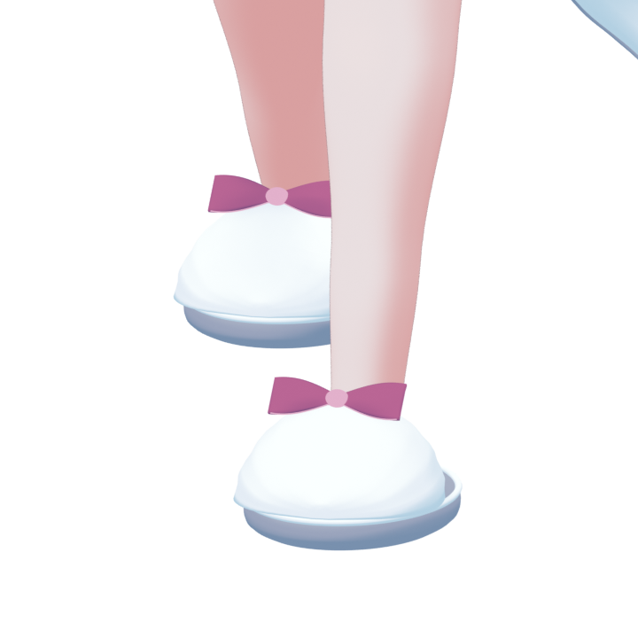
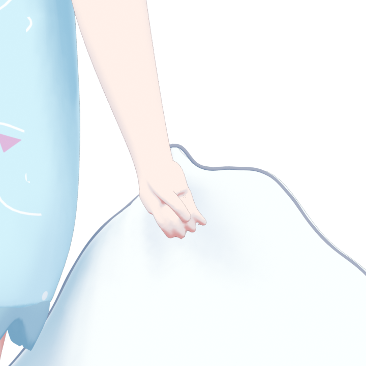
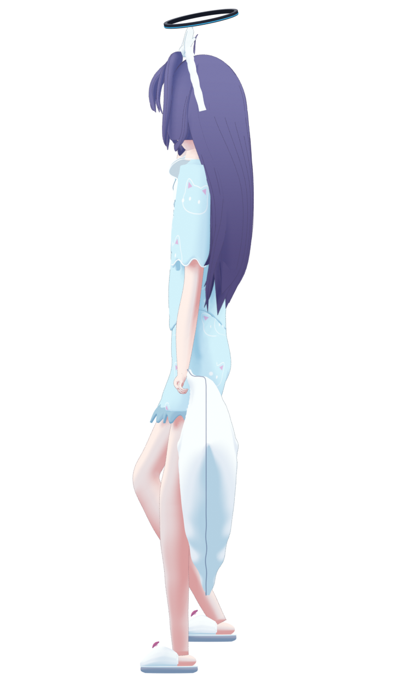

back.png
/home/dev/project/3d/gpt6-astra-pro_mcp-colabdev_blender_moonlit-pajamas/renders/review/R28-back.png93/100 · Subjective visual review. Only actual retained renders are shown.
/home/dev/project/3d/gpt6-astra-pro_mcp-colabdev_blender_moonlit-pajamas/renders/review/R28-back.png/home/dev/project/3d/gpt6-astra-pro_mcp-colabdev_blender_moonlit-pajamas/renders/review/R28-face.png
/home/dev/project/3d/gpt6-astra-pro_mcp-colabdev_blender_moonlit-pajamas/renders/review/R28-feet.png/home/dev/project/3d/gpt6-astra-pro_mcp-colabdev_blender_moonlit-pajamas/renders/review/R28-front.png
/home/dev/project/3d/gpt6-astra-pro_mcp-colabdev_blender_moonlit-pajamas/renders/review/R28-grip.png/home/dev/project/3d/gpt6-astra-pro_mcp-colabdev_blender_moonlit-pajamas/renders/review/R28-hand.png/home/dev/project/3d/gpt6-astra-pro_mcp-colabdev_blender_moonlit-pajamas/renders/review/R28-quarter.png
/home/dev/project/3d/gpt6-astra-pro_mcp-colabdev_blender_moonlit-pajamas/renders/review/R28-side.png